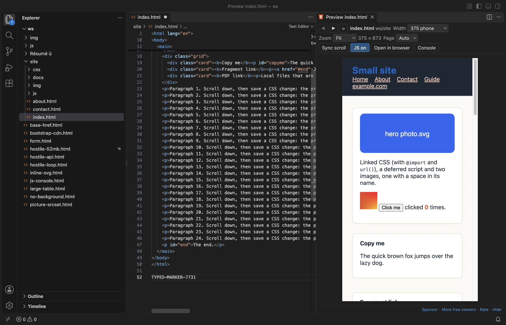
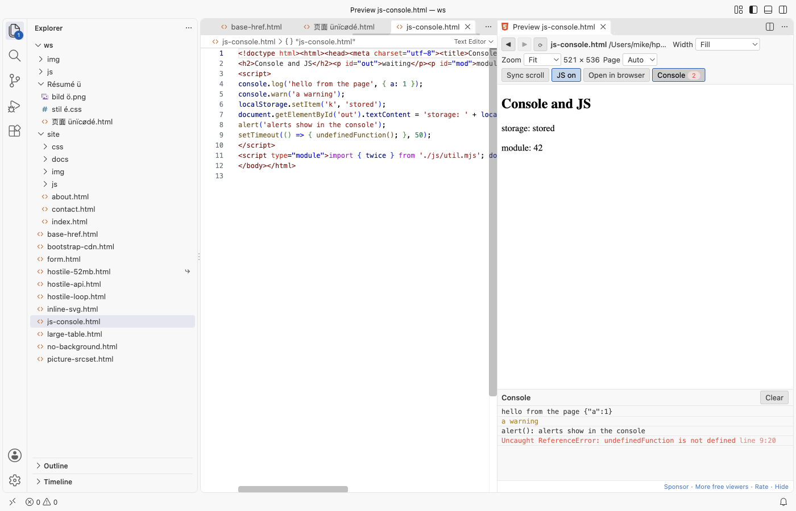
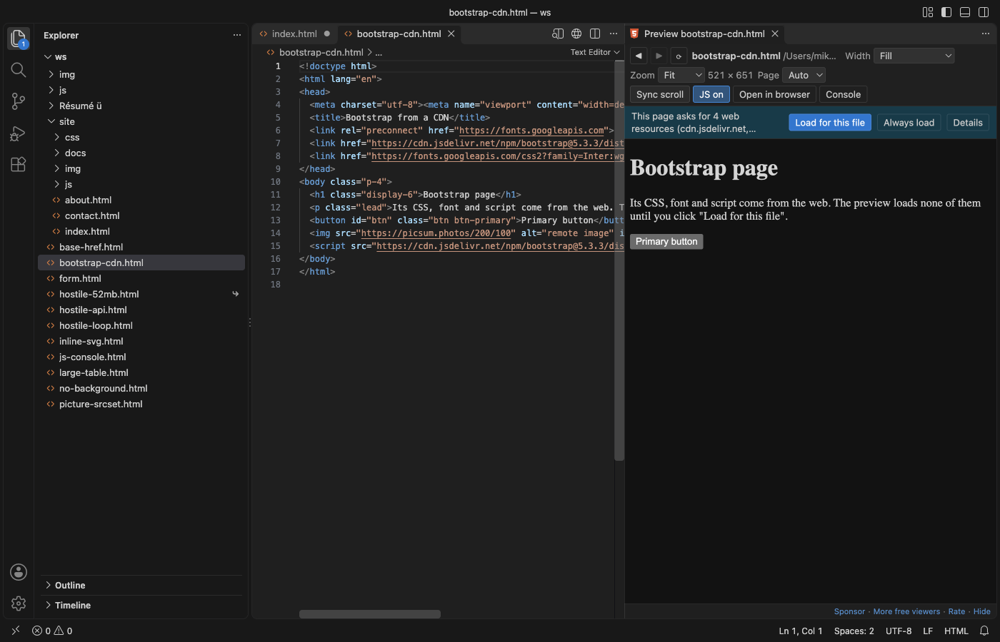
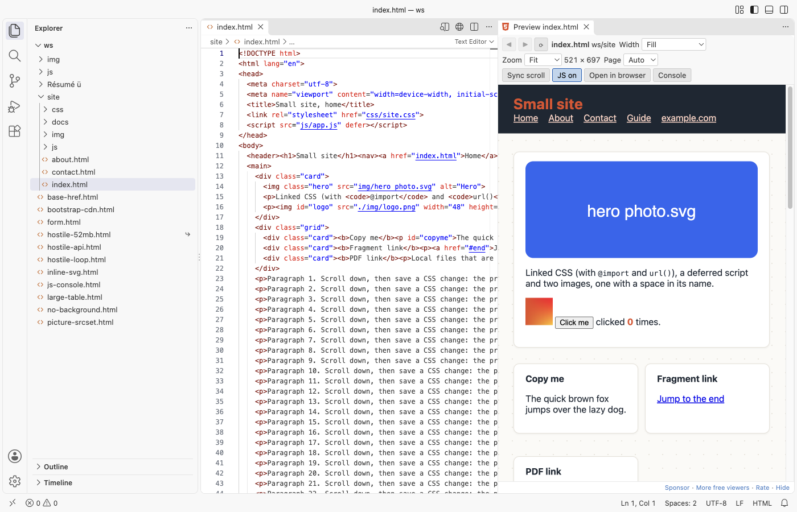

HTML Preview & HTML Viewer (Live, CSS and Images, Offline)
HTML Preview & HTML Viewer (Live, CSS and Images, Offline), a VS Code extension by Zovo
See your HTML page beside its code in VS Code, with its CSS, JavaScript and images. Free, no sign-in, works offline. It sends nothing anywhere and loads nothing from the web unless you click "Load for this file".
Free, MIT license. Needs VS Code 1.90.0 or newer. Extension ID zovo.zovo-html-preview, version 0.1.0.

A real 3-file site (samples/site/index.html, its CSS with @import and url(), a script and two images) in VS Code 1.142, dark theme.
Questions people ask
Is HTML Preview & HTML Viewer (Live, CSS and Images, Offline) free?
Yes. HTML Preview & HTML Viewer (Live, CSS and Images, Offline) is free and MIT licensed.
How do I install HTML Preview & HTML Viewer (Live, CSS and Images, Offline)?
Click "Install in VS Code" above, or search for zovo.zovo-html-preview in the Extensions view.
Open it
Open an .html file and click the preview icon at the top right of the editor, or press Cmd+K V (Ctrl+K V on Windows and Linux). The preview opens to the side. Your .html file stays a normal text editor: this extension never takes it over, and it does not use Ctrl+Shift+V.
Why another HTML preview
The two most installed "HTML Preview" extensions were last updated in 2018. Their reviews and issues name the same problems again and again. This one fixes them:
- CSS and images show. Linked stylesheets,
@import, CSSurl(), scripts,srcset,<picture>, fonts, video and local iframes all load, from relative paths,../paths,/paths (the workspace folder is the site root), paths with spaces and names in any language.<base href>is followed. - It updates as you type. The preview follows the editor, without saving. Save a linked CSS, JS or image file and the preview updates within a moment, even when you did not touch the HTML. The scroll position stays where it was.
- It works, and it is safe. No local web server and no port. The page runs in a sandboxed frame that cannot reach VS Code, your other files or the network. A page stuck in an endless loop is stopped after 5 seconds, and VS Code stays responsive.
It is also on Open VSX, so it works in Cursor, Windsurf, VSCodium and other editors based on VS Code. It reads files through VS Code, so it works over Remote-SSH, WSL and in dev containers too.
Features
- Phone, tablet and desktop widths: The Width list sets 320, 375, 768, 1024 or 1440 px, or your own width. Zoom fits the page in the panel or sets 50% to 200%.

- Links: links to other local pages open in the preview, with Back and Forward buttons.
#anchorlinks scroll the page. Web and mail links ask first, then open in your browser. Other local files (PDF, images, text) open in VS Code. - Copy: Select text in the preview and press
Cmd+C(Ctrl+C). - Console: The Console button shows
console.log, warnings, script errors, unhandled promise rejections,alert()text, form submits and the linked files that were not found. A badge counts warnings and errors.

- Web resources stay off until you say so: When a page links CSS, fonts, scripts or images from a CDN, a bar shows how many and from which hosts, and nothing is loaded. "Load for this file" loads them for that page; "Always load" turns on
htmlPreview.loadRemoteResources.

- Dark and light: the toolbar follows your VS Code theme. For pages that set no background of their own, Page: Auto shows them in the theme's colors; Light shows them white, as a browser does. Pages with their own background always show it.

- JavaScript on or off: Scripts run by default, sandboxed. JS off shows the page as it looks without scripts. In Restricted Mode (an untrusted folder), scripts do not run.
- Scroll sync: Turn on Sync scroll to move the preview with the editor.
- Follows the editor: Switch to another HTML file and the open preview shows it (setting
htmlPreview.followActiveEditor). - Open in browser opens the file in your web browser when you want the real thing.
Large files
HTML files up to 10 MB open at once; a 1.7 MB table with 10,000 rows shows in about a second. Larger files show a message first and are not read until you click "Show anyway" (setting htmlPreview.maxFileMB). Files over 32 MB are never shown. Linked files over 25 MB (a big video, for example) are left out and named in the console (setting htmlPreview.maxResourceMB).
Privacy and safety
- No telemetry, no account, no network requests. The preview has a Content Security Policy that blocks every host on the web until you click "Load for this file", and even then only images, styles, fonts, scripts, media and frames may load.
fetch, XHR and WebSocket stay blocked. - The page runs in a sandboxed frame with no origin. It cannot call VS Code commands, read the preview toolbar, open popups, send the window to another page or change your clipboard on its own. A page that tries to leave (
location.href = ...,<meta http-equiv="refresh">) stays on your file and is shown without scripts. - Only files in your workspace folders, the page's folder and the folder above it are read. A page asking for
file:///etc/passwdgets nothing, and the console says why. localStorage,sessionStorageanddocument.cookiework in memory for the page and are gone when the preview updates.
Settings
| Setting | Default | What it does |
|---|---|---|
htmlPreview.followActiveEditor | true | The preview shows the HTML file you switch to |
htmlPreview.updateDelayMs | 300 | Wait after typing before the preview updates |
htmlPreview.runScripts | true | Run the page's JavaScript (sandboxed) |
htmlPreview.loadRemoteResources | false | Load CSS, fonts, scripts and images from the web in every page |
htmlPreview.pageBackground | auto | Colors for pages that set none: auto, light or dark |
htmlPreview.scrollSync | false | Scroll the preview with the editor |
htmlPreview.maxFileMB | 10 | Larger HTML files wait for "Show anyway" |
htmlPreview.maxResourceMB | 25 | Larger linked files are left out |
htmlPreview.stuckScriptSeconds | 5 | Stop page scripts that keep the preview busy this long |
htmlPreview.askForRating | true | Ask for a rating once you have used it on a few days |
htmlPreview.showSupportLinks | true | Show the small Sponsor and More free viewers links |
Limits
- It is a preview, not a web server. Pages that need one (
fetchof local JSON files, server-side includes, PHP) do not work here; use a local server for those. - ES module imports are followed when they are relative (
./x.js). Bare imports (import "react") and import maps are not. - Dialogs (
alert,confirm,prompt) do not open in VS Code; they are written to the console, andconfirmanswers Cancel. - Edits made in the preview are not saved back to the file.
Install HTML Preview & HTML Viewer (Live, CSS and Images, Offline)
Click the button to open VS Code and install it, or press Ctrl+P (Cmd+P on macOS) in VS Code and run ext install zovo.zovo-html-preview.
Free, MIT license. Needs VS Code 1.90.0 or newer. Extension ID zovo.zovo-html-preview, version 0.1.0.
Source code and issues are on GitHub.
Support this work
If this extension saves you time, you can support the work on GitHub Sponsors. Monthly tiers start at $5, and one-time tiers start at $15. Sponsorship is optional, and the tool works the same without it.